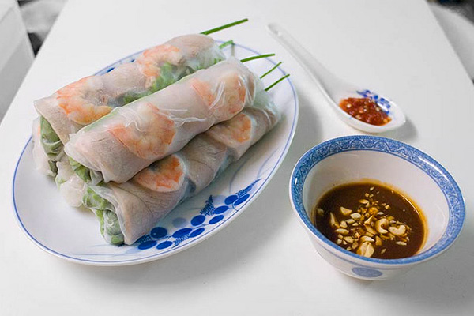

Vietnamese Spring Roll (Gỏi Cuốn) by Hungry Huy

Description
The spring roll is like the unfried cousin of the eggroll. Usually packed with fresh vegetables and a bit of protein, these are a tasty light treat.
This recipie will give basic fillings for a spring roll but feel free to add whatever fresh ingredients you would like. Spring roll paper can get sticky as it dries so it is best to eat these fresh or wrap them separately in plastic wrap to keep them from sticking together.
Ingredients
Filling
- 1 packet of firm to extra firm tofu
- Corn or tapioca starch
- 1 head red leaf lettuce
- 1 bunch of chives or green onions
- 1 pack of rice paper
- 1 pack starchless vermicelli or ramen noodles
- Cilantro
- Pickled carrots and daikon (optional)
Peanut Dipping Sauce
- 2 tbsp oil
- 2 tbsp minced garlic
- 8 tbsp hoisin sauce
- 2-3 tbsp peanut buttter
- 1 cup water
- Sambal chilie paste (optional)
Steps
Prepare the Filling
- Drain tofu, wrap in cloth, set on plate with heavy object on top to drain out water (20 min). Once dried, cut tofu into 2-3 inch long strips.
- Coat tofu pieces in starch while a fry pan preheats with oil. Fry each side of tofu, rotating with tongs, until all sides are toasted and crispy. Set aside to cool.
- Cook noodles according to packet. Chop lettuce, cilantro, and chives. Place in bowls around your rolling workstation for ease.
It's Roll Time
- Add warm water to a plate and soak a sheet of rice paper until malleable (5-15 seconds). Place on rolling workspace with the end closest to you hanging off the edge an inch.
- Add lettuce towards the bottom of the paper, leaving 1-2 inches on either side. Layer with cilantro and chives. Try not to add to much.
- Add tofu to middle of paper. Add noodles across the vegtables and spread evenly.
- Fold the left and right sides towards the middle so that it's snug. Fold the bottom up to cover the noodles. Pull down slightly while you begin to roll to keep it tight.
Peanut Dipping Sauce
- Heat a pan over medium heat, saute garlic in oil until fragrant.
- Add in hoisin sauce, peanut butter, and water. Stir thoroughly.
- Bring to a boil and immediately turn off the heat. Place in heat safe bowl.